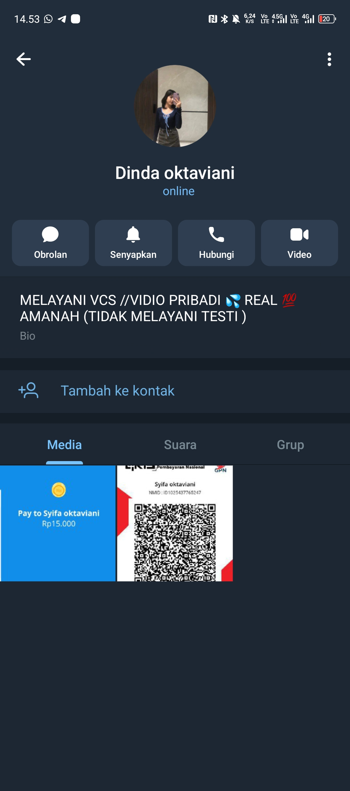
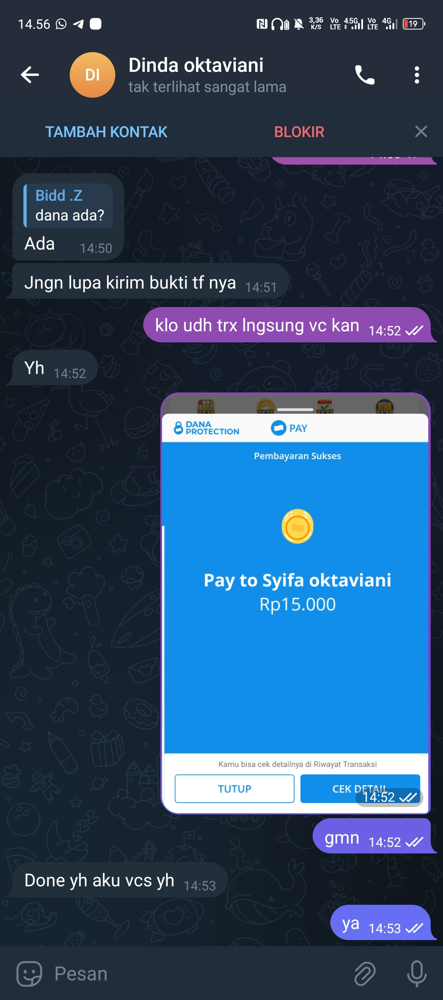
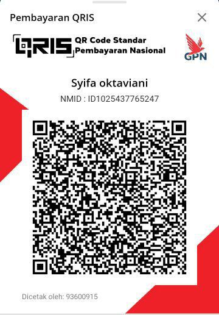

PATROLI
PatroliSiber.id — Bukti (FLAGGED)
Hanya menampilkan bukti screenshot yang dilampirkan pelapor
Tanggal: 2025-11-09 07:00:33 · Laporan #: PS-20251109-0001
⚠️ DIDUGA PENIPU
Bukti Utama

Screenshot 1 — QR Code / Bukti Pembayaran
Nama pada QR: Syifa oktaviani (NMID/ID: ID1025437765247)

Screenshot 2 — Profil & Gallery
File: 1000905175.jpg

Screenshot 3 — Chat & Bukti Transfer
File: 1000905176.jpg
Catatan Singkat
Jenis bukti:
QR code, profil media, tangkapan layar percakapan & bukti transfer.
Rekomendasi singkat:
kumpulkan metadata gambar & bukti transaksi, lalu laporkan ke pihak berwenang.
Instruksi Penggunaan Dokumen
Tujuan
Pengumpulan bukti visual untuk laporan internal/penegakan.
Status klaim
Diduga — tidak final.
Kontak
intel@patrolisiber.id